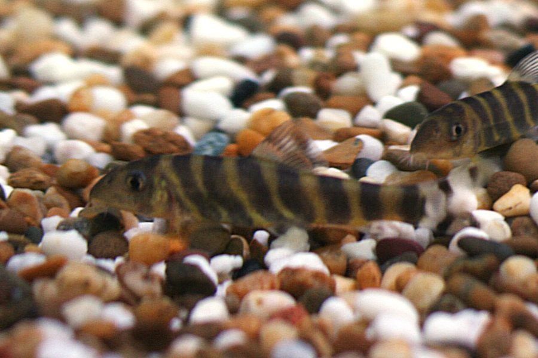

बंगाल लोचBengal Loach
Botia dario · Cobitidae · FSH-0083

- Scientific name वैज्ञानिक नाम
- Botia dario (Hamilton, 1822)
- Family कुल
- Cobitidae
- Hindi हिंदी
- बंगाल लोच
- Local names स्थानीय नाम
- bengal loach, botia dario, rani loch, bagh machhli
- Status here यहाँ की स्थिति
- native
- Movement आवागमन
- Resident, here all year
- Known from कहाँ दर्ज
- Others have published records from the wider Awadh–Purvanchal plain, none yet from Basti–Ayodhya अवध–पूर्वांचल से दूसरों के प्रकाशित अभिलेख, बस्ती–अयोध्या से अभी नहीं
- IUCN IUCN
- not evaluated
- Review समीक्षा
- not yet reviewed
When to look कब देखें
Present all year. साल भर मौजूद।
Tell it apart from इनसे अलग पहचानें
बंगाल लोच / Bengal Loach
Botia dario (Hamilton, 1822) — Cobitidae
बंगाल लोच — घाघरा और सरयू नदी तंत्र की रेतीली धाराओं में पाई जाने वाली एक अत्यंत सुंदर सुनहरी-पीली लोच, जिसके शरीर पर 7-8 तिरछी काली पट्टियां और आंख के नीचे दोमुंहा कांटा होता है।
Quick Identification त्वरित पहचान
| Feature | Description |
|---|---|
| Body shape | Deep, laterally compressed body with an arched dorsal profile and flat ventral line |
| Color pattern | Brilliant golden-yellow body crossed by seven to eight broad, oblique dark brown bands |
| Subocular spine | Sharp, retractable bifid subocular spine seated in a deep groove beneath each eye |
| Barbels | Four distinct pairs of barbels: two rostral pairs, one maxillary, and one mandibular |
| Sounds | Emits loud, audible clicking sounds using its pharyngeal teeth during social activity |
Distinctive, deep-bodied loach characterized by a brilliant golden-yellow background crossed by seven to eight broad oblique dark bands that frequently bifurcate towards the belly. Beneath each eye lies a sharp, erectile bifid subocular spine. The downward-turned mouth is surrounded by four pairs of barbels.
हिंदी: सुनहरे-पीले शरीर पर 7 से 8 तिरछी काली पट्टियों वाली सुंदर लोच मछली। इसकी दोनों आंखों के नीचे एक नुकीला दोमुंहा कांटा होता है। मुंह के पास चार जोड़ी मूंछें होती हैं और यह चटकाने जैसी आवाज निकालती है।
Morphology शारीरिक संरचना
| Feature | Description | Source |
|---|---|---|
| Total length (maximum) | 15.1 cm TL | Froese & Pauly (2025), FishBase |
| Subocular spine | Retractable bifid subocular spine erectile below each eye | Day (1889) |
| Barbels | Four pairs: two rostral pairs, one maxillary pair, and one mandibular pair | Talwar & Jhingran (1991) |
| Body bands | Seven to eight broad, oblique dark bands spanning flank and bifurcating ventrally | Jayaram (2010) |
The body is moderately deep, laterally compressed, with an arched back and an almost straight, flattened ventral profile. The head is pointed and compressed, featuring a downward-sloping conical snout. The mouth is inferior and small, surrounded by thick fleshy lips and 4 pairs of barbels (Talwar & Jhingran 1991). Below each eye, a strong, bifid, erectile subocular spine is recessed within a groove, capable of flicking outward as an antipredator mechanism (Day 1889). The dorsal fin originates midway between the snout tip and caudal fin base, containing 12 to 13 rays (Talwar & Jhingran 1991). The anal fin possesses 7 to 8 rays. The caudal fin is deeply forked. Ground coloration is bright golden-yellow to rich creamy-orange, crossed by 7 to 8 broad, oblique dark brown to bluish-black bands that often divide or form loops along the lower sides (Jayaram 2010). The caudal fin lobes carry two or three dark transverse bars.
हिंदी: FishBase (Froese & Pauly 2025) के अनुसार अधिकतम कुल लंबाई 15.1 सेमी होती है। आंख के नीचे दोमुंहा रक्षात्मक कांटा (Day 1889) होता है। मुंह पर चार जोड़ी मूंछें (Talwar & Jhingran 1991) होती हैं।
Behaviour & Ecology व्यवहार एवं पारिस्थितिकी
A social, gregarious loach that lives in small schools in flowing streams and deep river pools. It is predominantly active during dusk, dawn, and nighttime hours, retreating during bright daylight into submerged rock hollows, tree root crevices, or under sunken driftwood. When competing for shelter or interacting within the shoal, individuals produce distinctly audible clicking sounds produced by grinding their pharyngeal teeth. It uses its sensitive barbels and conical snout to inspect crevices and probe under stones for hidden prey.
हिंदी: यह नदियों और गहरे तालों में छोटे-छोटे झुंडों में रहने वाली सामाजिक मछली है। यह दिन में पत्थरों या पेड़ों की जड़ों के नीचे छिपती है और शाम को भोजन खोजती है। यह दांतों से चटकाने जैसी तेज आवाज निकालती है।
Life Cycle / Phenology जीवन चक्र एवं फेनोलॉजी
Reproduction occurs during the peak southwest monsoon from July to September, when river currents intensify and floodwaters inundate marginal channels (Talwar & Jhingran 1991). Breeding shoals move into clear, oxygen-saturated flowing waters over gravel beds. The female broadcasts adhesive, demersal eggs that lodge among submerged gravel, stones, and riverine root systems (Day 1889). The eggs hatch rapidly in well-oxygenated flowing water, and the juvenile loaches display prominent dark bands from an early stage.
हिंदी: प्रजनन मानसून के महीनों में जुलाई से सितंबर के दौरान होता है (Talwar & Jhingran 1991)। मछलियां कंकड़-पत्थर वाली तेज बहती धाराओं में अंडे बिखेरती हैं (Day 1889)। बहते साफ पानी में अंडों से तेजी से बच्चे निकलते हैं।
Host Plants or Prey आहार एवं शिकार
Specialized benthic carnivore and molluscivore. Equipped with sharp, pointed jaws and powerful pharyngeal teeth, it specializes in crushing small freshwater gastropod snails (Indoplanorbis, Gyraulus, Bellamya) and tiny bivalves. It also consumes aquatic insect larvae (chironomid midges, caddisflies, odonate nymphs), oligochaete worms, and small crustaceans.
हिंदी: यह एक मांसाहारी पेंदी-निवासी मछली है। यह अपने मजबूत जबड़ों से पानी के छोटे घोंघों और सीपियों को फोड़कर खाती है। साथ ही यह जलीय कीड़ों के लार्वा, केंचुए और छोटी झींगें खाती है।
Predators / Natural Enemies प्राकृतिक शत्रु एवं शिकारी
Preyed upon by large riverine predatory fishes including the freshwater shark (Wallago attu), bachcha (Eutropiichthys vacha), and goonch (Bagarius bagarius). Fish-eating mammals such as the smooth-coated otter (Lutrogale perspicillata) hunt it in deep river pools. Diving birds like the Little Cormorant (Microcarbo niger) catch individuals in shallow rapids. Its erectile bifid subocular spines can lodge firmly in the throat of an attacking predator, providing a painful defense.
हिंदी: इसे पढ़िन, बच्चा और गोंच जैसी बड़ी शिकारी मछलियां और उदबिलाव खाते हैं। पनकौआ भी इसका शिकार करता है। इसकी आंख का नुकीला कांटा शिकारी के गले में फंसकर इसकी रक्षा करता है।
Agricultural / Human Relevance कृषि एवं मानव उपयोगिता
Highly valued in both food and ornamental sectors. Locally, it is caught in cast nets and basket traps and sold fresh in rural markets across Awadh as an exceptional small indigenous table fish. Globally, its striking yellow-and-black tiger coloration, dynamic social interactions, and appetite for pest snails make it one of the most popular and commercially valuable loaches in the aquarium hobby trade.
हिंदी: यह खाने में बहुत स्वादिष्ट छोटी देशी मछली है। इसके आकर्षक पीले और काले बाघ जैसे पट्टों के कारण इसे एक्वेरियम में पालने के लिए बहुत पसंद किया जाता है, जिससे यह सजावटी मछली बाजार में अच्छी कीमत पाती है।
Expected Locally क्षेत्रीय संभावना
Not a field record. Written from published accounts for eastern Uttar Pradesh. No confirmed local sighting yet — if you have seen it, that is what the atlas needs.
अभी तक स्थानीय पुष्टि नहीं। यह विवरण प्रकाशित स्रोतों से है, किसी अवलोकन से नहीं।
GBIF holds published records across the northern Gangetic and Brahmaputra drainages in northern India. It is expected in the flowing waters and rocky or gravelly channels of the Ghaghara, Sarayu, and Rapti rivers in Awadh. A confirmed record requires an in-focus photograph displaying the 7–8 oblique dark bands, bifid subocular spine, and 4 pairs of barbels with location metadata.
हिंदी: यह घाघरा, सरयू और राप्ती नदियों के बहते और कंकड़ वाले जल में संभावित है। पुष्टि के लिए 7-8 तिरछी काली पट्टियों, आंख के नीचे के कांटे और चार जोड़ी मूंछों को दर्शाती स्पष्ट तस्वीर चाहिए।
Distribution वितरण
Distributed throughout the northern Indian subcontinent across India, Bangladesh, Nepal, and Bhutan in the Ganges, Brahmaputra, and Meghna river basins. Within Uttar Pradesh, it occurs in major perennial rivers and clean connected water channels.
हिंदी: यह भारत, बांग्लादेश, नेपाल और भूटान की गंगा, ब्रह्मपुत्र और मेघना नदी घाटियों में पाई जाती है। उत्तर प्रदेश में यह प्रमुख बारहमासी नदियों में मिलती है।
Research Questions शोध प्रश्न
- What acoustic frequencies and social triggers characterize the clicking sounds produced by Botia dario in river pools?
- To what degree can Botia dario effectively control vector snail intermediate hosts of schistosomiasis and fascioliasis in irrigation networks?
- How does boulder extraction and gravel mining in river beds alter the shelter availability for schooling Botia loaches?
- What is the seasonal reproductive phenology and ovarian development pattern of Botia dario under wild riverine regimes?
- क्या बंगाल लोच द्वारा निकाली जाने वाली चटकाने की आवाज झुंड के अन्य सदस्यों को सचेत करने के लिए होती है?
- क्या नहरों में इस मछली को छोड़ने से हानिकारक घोंघों की संख्या को जैविक रूप से नियंत्रित किया जा सकता है?
Similar Species समान प्रजातियाँ
| Similar species | Distinction | Hindi distinction | |
|---|---|---|---|
| Ticto Barb \ | Pethia ticto | Deep-bodied small barb with two distinct black spots; lacks oblique dark bars and subocular spine | टिकटो बार्ब का शरीर चौड़ा होता है और उस पर दो काले धब्बे होते हैं; इसमें तिरछी पट्टियां और कांटा नहीं होता |
| Chola Barb \ | Puntius chola | Silvery-gold barb with a single spot near caudal base; single pair of tiny barbels; lacks loach banding | चोला बार्ब का रंग चमकदार सुनहरी-चांदी जैसा होता है और पूंछ के पास एक काला तिल होता है; इसमें पट्टियां नहीं होतीं |
| Golden Barb \ | Pethia gelius | Tiny golden barb with black blotches on dorsal base and flanks; lacks bottom-dwelling loach profile | गोल्डन बार्ब बहुत छोटी मछली है जिसकी पीठ पर काले धब्बे होते हैं; इसका शरीर लोच जैसा लंबा नहीं होता |
Field rule: Golden-yellow deep loach with 7–8 dark oblique bands, 4 barbel pairs, and erectile subocular spine.
हिंदी: सुनहरी-पीली लोच मछली जिस पर 7-8 तिरछी काली पट्टियां, चार जोड़ी मूंछें और आंख के नीचे नुकीला कांटा होता है।
Taxonomy & Classification वर्गिकी एवं वर्गीकरण
Original description. Hamilton (1822), An Account of the Fishes Found in the River Ganges and Its Branches, p. 354; type locality: northern rivers of Bengal, India.
Subspecies. Monotypic species; distinguished by its unique color pattern from other South Asian cobitid loaches.
Family and order placement. Placed in the loach family Cobitidae, order Cypriniformes, class Actinopterygii.
IUCN status rationale. Not evaluated by the IUCN Red List; widely distributed throughout the northern Gangetic plains.
हिंदी: फ्रांसिस हैमिल्टन ने 1822 में इसका पहला वैज्ञानिक विवरण दिया था। यह कोबिटिडे कुल और सिप्रिनिफॉर्मीस गण की सदस्य है।
Photo Gallery फोटो गैलरी
No photos yet — add field photos to media/species/bengal_loach/ and run node scripts/sync_photos.js.
Photos needed आवश्यक फोटो
- [ ] Lateral profile of adult showing vivid golden-yellow body and oblique dark bands (वयस्क मछली के सुनहरे-पीले शरीर और तिरछी काली पट्टियों का स्पष्ट दृश्य)
- [ ] Close-up of head displaying erect bifid subocular spine and four pairs of barbels (आंख के नीचे खड़े दोमुंहे कांटे और चारों जोड़ी मूंछों का विस्तृत क्लोज-अप दृश्य)
- [ ] Detail of forked caudal fin showing dark transverse bars across lobes (कांटेदार पूंछ पर बनी काली पट्टियों का स्पष्ट दृश्य)
- [ ] School of loaches foraging over a rocky river substrate in flowing water (बहते पानी में पत्थरों के बीच भोजन खोजते हुए लोच के झुंड का दृश्य)
- [ ] Natural riverine channel or oxbow pool habitat along the Ghaghara River (घाघरा नदी के गहरे और साफ जल का प्राकृतिक वास परिदृश्य)
- [ ] Fresh specimen in an observation container showing ventral band branching (अवलोकन पात्र में रखी मछली के निचले हिस्से में पट्टियों के विभाजन का दृश्य)
References संदर्भ
- Original description: Hamilton, 1822 — see GBIF.
- Day, F. (1889). The Fauna of British India, Including Ceylon and Burma: Fishes. Vols. 1–2. Taylor & Francis, London.
- Talwar, P. K. & Jhingran, A. G. (1991). Inland Fishes of India and Adjacent Countries. Vols. 1–2. Oxford & IBH Publishing Co., New Delhi.
- Jayaram, K. C. (2010). The Freshwater Fishes of the Indian Region. Narendra Publishing House, Delhi.
- Froese, R. & Pauly, D. (Eds.) (2025). FishBase. World Wide Web electronic publication.
- GBIF Occurrence Data — Botia dario, India (2025).
Source file: species/fauna/fish/bengal_loach.md